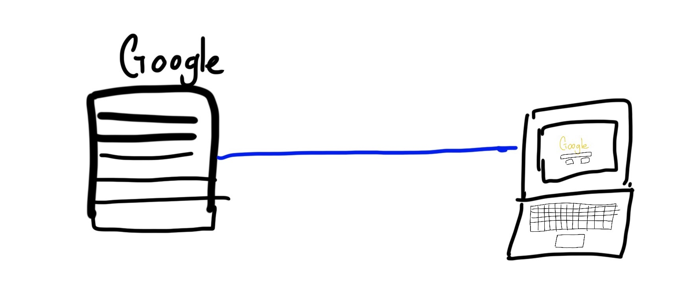

Nothing.
A web browser (Chrome, Safari, Firefox) is the application that we use to access the World Wide Web. But for our purposes, modern web browsers are unnecessary. All a web browser is, is an input that we can put websites into. Let's start with step 1, having a file.
For the purposes of this website, imagine the internet just consists of two computers, Google's, and your computer. The picture looks a little something like this:
The internet is just a bunch of wires connecting every computer to each other. There is no magic at play, just a very long cord. Now I live in Hawaii, so my laptop is all the way in Hawaii, and the Google Computer is located in California. This means that there is a cable that runs all the way from my laptop to the Google computer in California.
This cable is managed by your Internet Service Provider. So to be technical, your computer connects to your ISP, and the ISP connects to the Google Server. But imagine that in this internet, there exists only two computers. Yours and Google's.
A computer has an address, much like a house has an address. To send a letter to your grandma, you need an address. To receive a website from a server/computer/Google, you need it's address. The address that computers use is called an IP address. An IP address is just numbers, for example, www.google.com is really just "172.21.10.4".
If you were to put that IP address, you would get to www.google.com. The reason why we just a name, is for remberance. There is no way the average joe will remember 172.21.10.4, but they can for sure remember www.google.com. So when we put in www.google.com, it gets translated to that IP address, and through magic, finds it's way to the Google computer.
When you type in www.google.com, and hit enter, your computer goes on a search throughout the internet to find the computer that has that IP address. When it finds out the Google computer is located in Mountain View, CA, it establishes a connection. Sort of like a phone call. It asks the Google computer, hey I want your content.
The google server will take that request, gather it's goods and services, and send you back a file. This file is an HTML file.